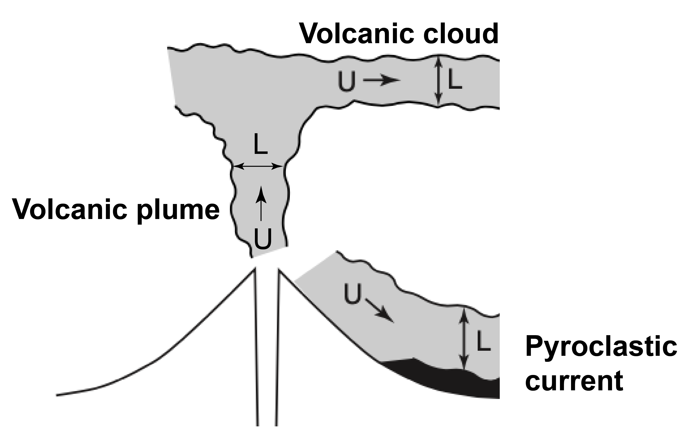

The scaling issue
As seen in the introduction, analogue laboratory experiments are powerful tools used to reproduce some natural processes under controlled initial and boundary conditions. They can also be used to isolate the contributions of key variables and to understand the role of each parameter independently. However, scaling analysis is fundamental to ensure that laboratory experiments are suitable analogue models for natural systems.
Objectives
At the end of this section, you will:
- Understand the necessity of scaling laboratory experiments
- Know the basic steps required to perform scaling analysis
- Be able to discuss the dynamic similarities between small-scale models and large scale volcanic phenomena based on main dimensionless numbers
Why is it important to scale laboratory experiments?
Volcanic processes typically happen over wide spatial and temporal scales, but also involve high velocities and accelerations that are not directly reproducible in a laboratory (see example below1).

Moreover, the dynamics of volcanic processes is much more complex than that of simple and controlled laboratory experiments2. Given these critical differences, it is not systematically guaranteed that laboratory experiments correctly address the dynamics at play in nature. Even though volcanic phenomena and experiments may look alike, only a scaling analysis can ensure the similarity between them. Proper scaling is also necessary to identify the limitations of analogue models in reproducing natural processes.
Scaling analysis
The fundamental principle of scaling is that physical processes are scale invariant (i.e., they apply in the same proportions at all scales) if they are similar. To be similar, the lengths in the systems must be proportional and the angles must be equal (geometric similarity), the time for changes to occur must be proportional (kinematic similarity), and the forces applied to the systems must be proportional (dynamic similarity). If systems are similar, then results obtained at the small scale can be extrapolated to larger scales using scale factors3.
However, designing perfect analogue models ensuring geometric, kinematic and dynamic similarity simultaneously is not possible for most volcanic processes. For example, a main limitation is that gravitational forces affecting volcanic processes and analogue models are the same and cannot be scaled down, despite the substantial size discrepancy. Hence, scaling analysis commonly rely on dimensional analysis and dimensionless numbers to assess the similarity of model and its natural counterpart.
Dimensional analysis and dimensionless numbers
Dimensional analysis can be used to identify a set of independent dimensionless numbers that characterise the physical regimes of a system using the "Buckingham \(\pi\) theorem". Dimensionless numbers can be calculated from dimensional analysis, but also selected among existing dimensionless numbers that are applicable to given physical setting.
Dimensional and dimensionless quantities
Physical phenomena can be characterised by equations involving dimensional quantities (e.g., durations, forces, accelerations) that are described by a combination of the 7 SI base units (Système International d'unités).
| Quantity | Dimensions | SI units |
|---|---|---|
| Length | L | m (meter) |
| Mass | M | kg (kilogram) |
| Time | T | s (second) |
| Electric current | I | A (ampère) |
| Temperature | \(\theta\) | K (kelvin) |
| Amount of substance | N | mol (mole) |
| Luminous intensity | J | cd (candela) |
On the other hand, dimensionless quantities have a SI unit of one, meaning that they don't have a physical dimension. They are often obtained from ratios of dimensional quantities, whose dimensions cancel out in the fraction (e.g., the relative density is a dimensionless quantity defined as the ratio of the density of a substance over a reference density).
Dimensionless numbers adapted to volcanological problems
The first step to scaling volcanological systems is to identify a relevant set of dimensionless numbers that characterise the physical processes. Knowing the specific aspects that are adressed by laboratory experiments (e.g., fluid flow, transport of particles), it is possible to determine which dimensionless numbers can be used to describe the physical processes. When relevant dimensionless numbers are identified, their values are calculated for the natural phenomenon and for the experiments. Similarity is ensured when the calculated dimensionless numbers are identical or very similar in the model and in nature, even if the values in the governing dimensional parameters are very different3.
The most important dimensionless numbers that are used in volcanology are defined and described here. In particular, a special attention is given to the numbers characterising volcanic flows.
Characterising fluid flows with dimensionless numbers
The Reynolds number (\(Re\)) characterises the flow behaviour by quantifying the importance of inertial to viscous forces within a fluid. \(Re > 10^3\) is indicative of turbulent flows, which are associated with the creation of chaotic eddies, vortices, and instabilities. Laminar flows occur for \(Re < 10^3\) and are characterised by smooth, constant fluid motions. The Reynold number is calculated as:
\(Re = \frac{U L}{\nu}\).
In the formula above, \(U\) and \(L\) are the characteristic velocity and length scale for the flow, and \(\nu\) is the kinematic viscosity of the fluid.
Defining characteristic properties of a flow (e.g., \(U\) and \(L\)) is not obvious. For dimensionless numbers looking at mean flow properties, such as the Reynolds number, \(U\) corresponds to the mean velocity in the main flow direction (e.g., vertical velocity for ascending volcanic plumes and horizontal speed for horizontally spreading volcanic clouds). \(L\) is then defined as the lenght scale perpendicular to this speed (e.g., the width of the volcanic plume or the thickness of the volcanic cloud). This is illustrated in the diagram below2

The Grashof (\(Gr\)) and Rayleigh (\(Ra\)) numbers compare the buoyancy and viscous forces within a fluid. Both numbers are used to study systems involving natural convection due to buoyancy. \(Gr\) is generally used to characterise mass transfer problems, whereas \(Ra\) is used in situations involving heat transfers. It is expected that convection starts for \(Gr\) or \(Ra\) greater than \(10^3\). \(Gr\) can be defined as:
\(Gr = \frac{g(\rho_f-\rho_a)L^3}{\rho_a\nu^2}\),
where \(g\) = 9.81 m s\(^{-2}\) is the gravitational acceleration, \(\rho_f\) is the density of the flow (e.g., density of the volcanic plume), \(\rho_a\) is the density of the ambient fluid (e.g., density of the atmosphere). The ratio of the densities is often expressed as the reduced gravity:
\(g'=g\frac{\rho_f-\rho_a}{\rho_a}\).
Similarly, \(Ra\) can be calculated as:
\(Ra = \frac{g'L^3}{\nu\alpha}\),
where \(\alpha\) is the thermal diffusivity of the fluid.
Finally, the Richardson number (\(Ri\)) is a commonly used dimensionless number in volcanology. It characterises the relative importance of the buoyancy and inertia forces within a fluid. Flows are dominated by buoyancy for \(Ri > 1\), whereas flows are governed by inertia for \(Ri < 1\). \(Ri\) is defined as:
\(Ri = \frac{g'L}{U^2}\).
This number is equivalent to the densimetric Froude number (\(Fr\))
\(Fr = \frac{U}{(g'L)^{1/2}} = \frac{1}{Ri^{1/2}}\).
Dimensionless numbers characterising the behaviour of particles in a flow
Most volcanic phenomena involve multiphase flows, where solid particles interact with the fluid phase. Solid particles can possibly interact between each other, depending on their concentration in the flow. The Savage (\(Sa\)), Bagnold (\(Ba\)) and Darcy (\(Da\)) numbers can be used to characterize the dynamical regime of dense fluid-particle flows (i.e., high particle concentrations)4. The Savage number (Sa) is relevant when interstitial pore fluid pressure (i.e., the pressure held by the fluid in gaps between particles) is negligible and it compares the grain collisional to frictional stresses
\(Sa = \frac{\rho_p \gamma^2 d_p^2}{(\rho_p-\rho_a) g L}\),
where \(\rho_p\) and \(d_p\) are the particle density and diameter, respectively. \(\gamma\) is the characteristic shear rate. Frictional flows have \(Sa < 0.1\) whereas collisions affect the flow dynamics significantly at \(Sa > 0.1\). When the interstitial pore fluid pressure has a non negligible effect, the Bagnold number (\(Ba\)) can be used to compare the collisional solid stresses and viscous fluid stresses
\(Ba = \frac{\rho_p \gamma d_p^2 \epsilon_p}{\mu(1-\epsilon_p)}\),
with \(\epsilon_p\) the particle volume fraction, and \(\mu\) the dynamic viscosity of the fluid phase. The interstitial fluid viscosity strongly influences the flow dynamics in flows characterised by \(Ba < 40\). On the other hand, particle collisions dominate for \(Ba > 450\).
The Darcy number (\(Da\)) can also be used to estimate the ratio of viscous fluid-particle interaction stresses to particle inertial stresses
\(Da = \frac{\mu}{\rho_p \gamma \kappa \epsilon_p}\),
with \(\kappa\) the permeability of the granular medium. \(Da\) also quantifies the tendency for interstitial pore fluid pressure to buffer particle interactions, and solid-fluid interactions dominate where \(Da\) is high 4.
For dilute flows (i.e., low particle concentrations), particle-particle interactions are limited but a complex mechanical coupling between the fluid and the solid phases can exist. This can be assessed based on the values of the Stokes (\(St\)) and Sedimentation (\(\Sigma\)) numbers124. Assuming that \(U^2/L\) is the scale of fluid acceleration, these numbers can be defined as:
\(St = \frac{(\rho_p-\rho_a)d_p^2 U}{18 f \mu L}\),
and
\(\Sigma = \frac{(\rho_p-\rho_a)g d_p^2}{18f\mu U}\),
where f is a drag coefficient. If both \(St > 1\) and \(\Sigma > 1\), particles are completely decoupled from the fluid phase and either settle or are expelled from the flow. Particles are strongly coupled with the fluid phase where \(St < 1\) and \(\Sigma < 1\). This regime favours the transport of particles within the flow.
Summary of dimensionless numbers commonly used in volcanology
The table below summarises the main dimensionless numbers commonly used in volcanology, as well as their typical values for volcanic plumes and lava flows4.
| Dimensionless number | Expression | Signification | Volcanic plumes | Lava flows |
|---|---|---|---|---|
| Reynolds | \(Re = \frac{U L}{\nu}\) | viscous over inertial forces laminar flow for \(Re < 10^3\) turbulent flow for \(Re > 10^3\) |
\(10^7 - 10^9\) | \(10^{-1} - 10^3\) |
| Grashof | \(Gr = \frac{g(\rho_f-\rho_a)L^3}{\rho_a\nu^2}\) | buoyancy over viscous forces (mass transfer problems) convection for \(Gr > 10^3\) |
\(10^{12} - 10^{19}\) | \(10^4 - 10^8\) |
| Rayleigh | \(Ra = \frac{g'L^3}{\nu\alpha}\) | buoyancy over viscous forces (heat transfer problems) convection for \(Ra > 10^3\) |
\(10^{11} - 10^{19}\) | \(10^9 - 10^{14}\) |
| Richardson | \(Ri = \frac{g'L}{U^2}\) | buoyancy over intertial forces dominated by buoyancy for \(Ri > 1\) |
\(10^{-3} - 10^1\) | \(10^{-2} - 10^2\) |
| Froude | \(Fr = \frac{U}{(g'L)^{1/2}}\) | inertial over buoyancy forces dominated by inertia for \(Fr > 1\) |
\(10^{-1} - 10^1\) | \(10^{-1} - 10^1\) |
| Savage | \(Sa = \frac{\rho_p \gamma^2 d_p^2}{(\rho_p-\rho_a) g L}\) | grain collisional over frictional stresses (negligible interstitial pore pressure) friction dominate for \(Sa < 0.1\) collisions influence flow behaviour for \(Sa > 0.1\) |
\(-\) | \(10^{-16} - 10^{-16}\) |
| Bagnold | \(Ba = \frac{\rho_p \gamma d_p^2 \epsilon_p}{\mu(1-\epsilon_p)}\) | solid stresses over fluid stresses (with interstitial pore pressure) strong influence of fluid viscosity for \(Ba < 40\) particle collisions dominate for \(Ba > 450\) |
\(-\) | \(10^{-12} - 10^{-4}\) |
| Darcy | \(Da = \frac{\mu}{\rho_p \gamma \kappa \epsilon_p}\) | viscous fluid-particle stresses over particle inertial stresses (with interstitial pore pressure) solid-fluid interactions dominate if \(Da\) is high |
\(-\) | \(10^{10} - 10^{17}\) |
| Stokes | \(St = \frac{(\rho_p-\rho_a)d_p^2 U}{18 f \mu L}\) | particle response time over timescale of the flow (dilute flow) |
\(10^{-4} - 10^{3}\) | \(10^{-14} - 10^{-6}\) |
| Sedimentation | \(\Sigma = \frac{(\rho_p-\rho_a)g d_p^2}{18f\mu U}\) | particle settling velocity over flow velocity particles fully decoupled for \(St > 1\) and \(\Sigma > 1\) particles are fully coupled for \(St < 1\) and \(\Sigma < 1\) intermediate regimes for other combinations |
\(10^{-6} - 10^{1}\) | \(10^{-11} - 10^{-5}\) |
The values of these dimensionless numbers are related to specific physical regimes that need to be reproduced in laboratory experiments. Experimental set-ups are therefore designed in order to reproduce those values in the laboratory, notably by selecting the material for analogue modelling. Even though it is generally impossible to match all the conditions in the natural system, the dimensionless numbers can be used to identify relevant dynamical regimes and to discuss the limitations of the experimental results4.
Summary
This section highlighted the importance of scaling analogue models in order to reproduce the dynamical regimes present in nature at the scale of the laboratory. This requires to perform a scaling analysis.
First, relevant dimensionless numbers are identified to characterise natural volcanic processes. Second, the values of dimensionless numbers are calculated for the natural process. Third, these values are used to identify dynamical regimes in nature. Fourth, the experimental set-up is designed in order to reproduce the values of dimensionless numbers in the laboratory. Finally, dimensionless numbers can be used to discuss the similarity of analogue models and the limitations of the experimental results.
Using the example of pyroclastic density currents, the next section will show how analogue modelling can be applied to the study of volcanic flows.
References
-
Carazzo, G., & Jellinek, A. M. (2012). A new view of the dynamics, stability and longevity of volcanic clouds. Earth and Planetary Science Letters, 325, 39-51. ↩↩
-
Burgisser, A., Bergantz, G. W., & Breidenthal, R. E. (2005). Addressing complexity in laboratory experiments: the scaling of dilute multiphase flows in magmatic systems. Journal of Volcanology and Geothermal Research, 141(3-4), 245-265. ↩↩↩
-
Kavanagh, J. L., Engwell, S. L., & Martin, S. A. (2018). A review of laboratory and numerical modelling in volcanology. Solid Earth, 9(2), 531-571. ↩↩
-
Roche, O., & Carazzo, G. (2019). The contribution of experimental volcanology to the study of the physics of eruptive processes, and related scaling issues: A review. Journal of Volcanology and Geothermal Research, 384, 103-150. ↩↩↩↩↩